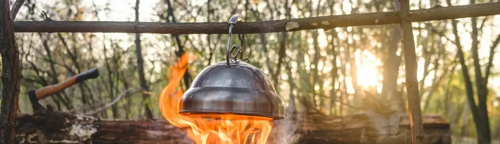

Kompor Kayu Bakar: Menyingkap Aroma Khas, Kenangan Manis, dan Realitas Dapur Tradisional
Dipublikasikan pada 31 Juli 2025

Saat mudik ke kampung halaman, banyak dari kita akan disambut oleh dapur tradisional yang khas. Dapur semacam ini, seringkali berlantaikan tanah atau semen, tak lengkap tanpa kehadiran kompor kayu bakar. Ada aroma istimewa yang terpancar dari dapur ini: wangi masakan yang berpadu sempurna dengan aroma asap kayu bakar. Bayangkan saja, nikmatnya soto yang direbus perlahan di atas api kompor kayu, mengisi udara dengan keharuman saat menunggu waktu berbuka puasa di penghujung Ramadan. Sungguh kenangan yang tak terlupakan.
Lebih dari sekadar aromanya yang unik, kompor kayu tradisional juga menyimpan segudang cerita dan kenangan. Mulai dari manisnya momen memasak bersama Nenek, hingga kelebihan dan kekurangan yang melekat pada penggunaan kompor bahan bakar kayu ini. Mari kita selami lebih jauh sisi lain dari alat masak yang penuh histori ini.
Keunggulan Kompor Kayu Bakar: Ketersediaan Bahan Bakar dan Karakteristik Api
Salah satu daya tarik utama kompor kayu bakar terletak pada ketersediaan bahan bakar yang melimpah di pedesaan. Umumnya, kayu bakar didapatkan dari pohon yang sudah mati atau ranting-ranting yang gugur di kebun atau hutan. Bahkan, sisa kayu bangunan pun tak jarang dimanfaatkan sebagai bahan bakar. Inilah mengapa kompor kayu bakar menjadi pilihan menarik dan relevan di pedesaan, berbeda dengan tantangan mencari sumber kayu di perkotaan.
Keunggulan lain dari kompor kayu adalah karakteristik apinya yang besar dan berwarna kuning. Api ini menghasilkan panas yang lebih merata, meski dengan suhu yang relatif lebih rendah dibandingkan kompor dengan api biru. Ini berarti masakan cenderung tidak mudah gosong dan, konon, bisa jadi membuat aroma masakan lebih meresap sempurna. Tidak dapat dimungkiri, aroma khas kompor kayu bakar ini seringkali menjadi rahasia di balik cita rasa masakan kampung halaman yang begitu lezat. Mungkin ini sebabnya masakan Nenek selalu terasa istimewa, ya?
Keterbatasan dan Tantangan Penggunaan Kompor Kayu Bakar
Di balik berbagai keunggulannya, kompor kayu bakar tradisional tentu memiliki keterbatasan. Salah satu yang paling menonjol adalah asap yang melimpah. Bagi Anda yang terbiasa memasak dengan kompor gas atau kompor induksi, intensitas asap dari kompor kayu bakar tradisional ini mungkin akan terasa sangat pekat.
Selain itu, keterbatasan lainnya adalah peralatan masak yang akan menghitam. Ini adalah konsekuensi alami dari sisa pembakaran kayu. Berbeda dengan alat masak yang biasa digunakan di dapur modern yang jarang terpapar asap hitam, pengguna kompor listrik atau kompor gas biasanya tidak akan menghadapi masalah ini.
Jadi, kompor kayu bakar tradisional memang memiliki kelebihan dan kekurangannya sendiri. Namun, bagi sebagian besar dari kita yang memiliki kenangan mudik ke kampung halaman, kompor ini tak hanya sekadar alat masak, melainkan simbol dari segudang cerita dan nostalgia manis.
Video Cara Menyalakan Kompor Kayu Bakar
Video di bawah ini akan menjelaskan tentang bagaimana cara menyalakan kompor kayu bakar